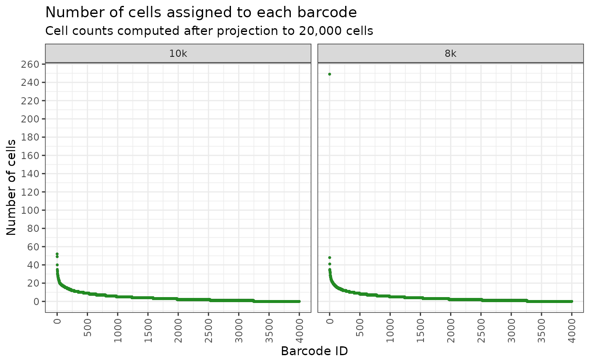
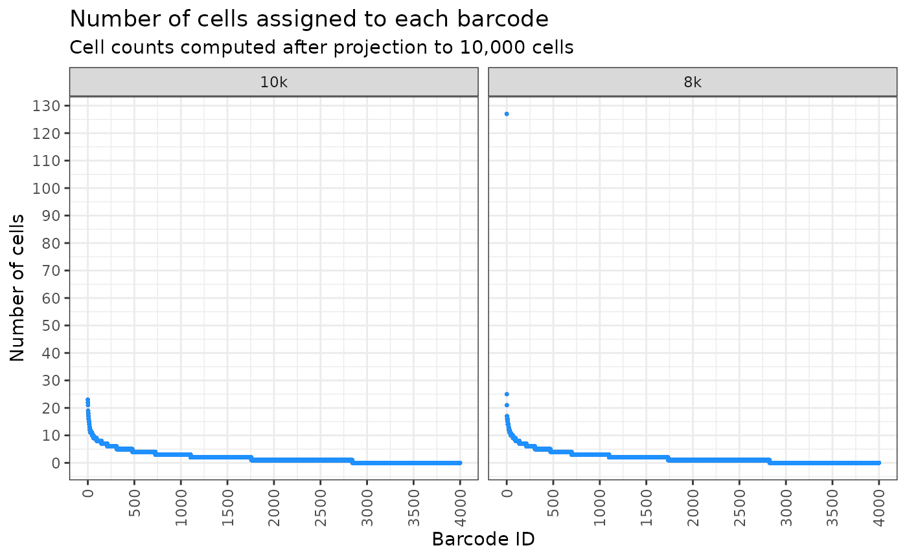

analyse_dnaseq_data.RmdThis vignette focuses on using the package to analyse DNA-seq data. DNA-seq data refers to lineage tracing DNA barcoding data which exclusively sequences clone barcode reads using Next Generation Sequencing.
We will go through how to analyse clone barcode distributions from DNA-seq data which can inform the design of future scRNAseq experiments.
In addition to CloneDetective we’ll load the following packages:
Before we delve into investigating what our DNA-seq data looks like, we have to load it in first.
Assuming you have used NextClone to extract the clone barcodes from your raw FASTQ files, you will now have a CSV file where each row corresponds to a unique clone barcode and its frequency in the sample.
If you have used other pipeline to extract (which you are more than welcomed to), you will have to wrangle the output such that you get the aforementioned CSV file.
For the purpose of this vignette, I have randomly sampled 4000 clone barcodes from the 8k and 10k DNA-seq data we used in our paper.
Let’s load it up using data.table and take a peek inside
using the head function. The data is included in the
package in extdata folder which we can located using
system.file function.
clones_nxclone <- fread(
system.file("extdata", "dnaseq_clone_barcode_counts_subsampled.csv",
package = "CloneDetective")
)
head(clones_nxclone)
#> sample_name known_barcode read_count
#> 1: 10k TCGGACGCTGGTGAATCTTT 190
#> 2: 10k GAAGTATCTGGGTTTGGAAG 291
#> 3: 10k TCTTGAGGGGAGCCAGACCG 91
#> 4: 10k TTTCAGGGCGTGGATACCAG 404
#> 5: 10k GAAGGGGAGGAGTCATGTCG 797
#> 6: 10k TCTAGCAGAGGAAGAGAAGG 15Let’s quickly go through what the columns are:
CloneDetective offers functions to count the number of clone barcodes in the dataset and to filter out clones with low abundance based on a predefined cell count threshold.
To do this, we have to first specify the filtering thresholds, i.e. the numeric vector listing the minimum cell counts required for a clone to be included in the count. For this example, we will set the thresholds to 1, 20, 200, 1000 to see how many clones we get with at least 1, 20, 200, 1000 cells.
thresholds <- c(1, 20, 200, 1000)Then we will count how many clones with 1, 20, 200, 1000 cells.
n_barcodes_nxclone <- count_retained_clones(
count_data = clones_nxclone,
thresholds = thresholds,
grouping_col = "sample_name",
count_column = "read_count"
)The grouping_col parameter essentially tells the
function to repeat the counting procedure for each unique value in the
sample_name column of our clone data
(clones_nxclone). The count_column tells the
function which column contains the number of cells detected for each
clone.
Let’s take a peak at the result.
n_barcodes_nxclone
#> sample_name at_least_1_cells at_least_20_cells at_least_200_cells
#> 1: 10k 4000 3510 2059
#> 2: 8k 4000 3578 2257
#> at_least_1000_cells
#> 1: 247
#> 2: 355Each row is a sample, and each column tells you how many clones we
get with at least 1, 20, 200, 1000 cells. Remember, we are using
sub-sampled DNA-seq data, that is why the at_least_1_cells
column for both samples have exactly 4,000 clones.
This information is useful to see how many reasonably sized clones we
get in our DNA-seq data. Often, it is not even worthwhile keeping clones
that have too little cells. To remove them, we can use the
remove_clones_below_threshold function.
clones_nxclone_filtered <- remove_clones_below_threshold(
count_data = clones_nxclone,
threshold = 20,
count_column = "read_count"
)Let’s see how many clones were removed using the table
function which is a neat little function that count the number of
occurences in a vector.
table(clones_nxclone_filtered$sample_name)
#>
#> 10k 8k
#> 3510 3578While these are all super useful, it is even better if we can look at the proportion of cells in each clone (against the total number of cells in the sample), and illustrate this as an ordered abundance plot. Such plots are insightful for determining whether clones proliferated uniformly or if some clones were more dominant, potentially outcompeting and restricting the expansion of others.
We can draw the plot using draw_ordered_abundance_plot,
but before we do that, we need to convert our the cell count to
proportion. We can do this using
convert_count_to_proportion function. Let’s run all of that
and add a bit of customisation to our plot to make it look pretty.
clones_nxclone_filtered <- convert_count_to_proportion(
count_data = clones_nxclone_filtered,
grouping_col = "sample_name",
count_column = "read_count"
)
plt <- draw_ordered_abundance_plot(
count_data = clones_nxclone_filtered,
facet_column = "sample_name",
y_axis_column = "read_proportion"
)
plt <- plt +
geom_point(size=0.5, colour='red') +
labs(
title = "Proportion of cells assigned to each barcode",
subtitle = "Barcode IDs are numerically assigned in order of read proportion",
x = "Numerical barcode ID",
y = "Proportion of cells per sample"
)
pltFrom this plot, you can see that the 10k sample looks even, which means the clones are expanding evenly. However, for the 8k sample, we have one clone (one outlier dot at around 0.015 mark at the y-axis) which seems to have expanded much more than others. The proportion of cells belonging to this clone is much much more than others.
For the future, it may be best to not use the 8k sample because of this dominant clone restricting the space available for others to grow.
We can use the calculated cell proportions above to forecast clonal abundance for future scRNAseq experiments. This is helpful for estimating the number of cells to sequence for a given clonal library in order to maximise the chance of obtaining a reasonable representation of clones. For example, say we plan to sequence 10,000 or 20,000 cells. Can we reasonably estimate how many cells will be obtained per clone? Yes we can.
First thing first though, we need to do the estimation. We can do
this using the project_clones function.
clones_nxclone_proportion <- project_clones(
count_data = clones_nxclone,
grouping_col = "sample_name",
count_column = "read_count",
project_amnt = c(10000, 20000)
)You may have noticed by now that many functions in the package use
the same parameter names. They indeed do, and we intentionally do this
so to keep things simple. The only new parameter here is
project_amnt which if you look at the values, you may have
guessed what they represent, the number of cells to project our cell
proportions to.
Let’s take quick peek into this.
head(clones_nxclone_proportion)
#> sample_name known_barcode read_count read_count_proportion
#> 1: 10k TCGGACGCTGGTGAATCTTT 190 1.425434e-04
#> 2: 10k GAAGTATCTGGGTTTGGAAG 291 2.183165e-04
#> 3: 10k TCTTGAGGGGAGCCAGACCG 91 6.827081e-05
#> 4: 10k TTTCAGGGCGTGGATACCAG 404 3.030924e-04
#> 5: 10k GAAGGGGAGGAGTCATGTCG 797 5.979322e-04
#> 6: 10k TCTAGCAGAGGAAGAGAAGG 15 1.125343e-05
#> projected_10000_confidence_1 projected_20000_confidence_1
#> 1: 1.4254344 2.8508688
#> 2: 2.1831653 4.3663306
#> 3: 0.6827081 1.3654161
#> 4: 3.0309237 6.0618473
#> 5: 5.9793222 11.9586444
#> 6: 0.1125343 0.2250686We have 2 extra columns now (the
read_count_proportion column was computed using
convert_count_to_proportion in the previous section). Each
column represents the estimated number of cells if you sequence 10,000
or 20,000 cells.
Note, for this estimation, we assume all the cells will get a clone
barcode. Chances are this won’t happen, and you will probably get 80% to
90% of cells getting clone barcode. We can add this information in as
the confidence_threshold parameter, and redo the
estimation. Note that confidence_threshold takes value
between 0 to 1, so you will need to convert the percentage (if 80% then
it is 80/100 = 0.8).
clones_nxclone_proportion <- project_clones(
count_data = clones_nxclone,
grouping_col = "sample_name",
count_column = "read_count",
project_amnt = c(10000, 20000),
confidence_threshold = 0.8
)
head(clones_nxclone_proportion)
#> sample_name known_barcode read_count read_count_proportion
#> 1: 10k TCGGACGCTGGTGAATCTTT 190 1.425434e-04
#> 2: 10k GAAGTATCTGGGTTTGGAAG 291 2.183165e-04
#> 3: 10k TCTTGAGGGGAGCCAGACCG 91 6.827081e-05
#> 4: 10k TTTCAGGGCGTGGATACCAG 404 3.030924e-04
#> 5: 10k GAAGGGGAGGAGTCATGTCG 797 5.979322e-04
#> 6: 10k TCTAGCAGAGGAAGAGAAGG 15 1.125343e-05
#> projected_10000_confidence_0_8 projected_20000_confidence_0_8
#> 1: 1 1
#> 2: 2 3
#> 3: 1 1
#> 4: 3 6
#> 5: 4 10
#> 6: 0 0We can no visualise this as ordered abundance plot to see what the clone abundance look like.
plt <- draw_ordered_abundance_plot(
count_data = clones_nxclone_proportion,
y_axis_column = 'projected_20000_confidence_0_8',
facet_column = 'sample_name'
) +
geom_point(size = 0.5, colour='forestgreen') +
labs(
y = 'Number of cells',
title = 'Number of cells assigned to each barcode',
subtitle = 'Cell counts computed after projection to 20,000 cells'
)
plt
And for sequencing 10,000 cells?
plt <- draw_ordered_abundance_plot(
count_data = clones_nxclone_proportion,
y_axis_column = 'projected_10000_confidence_0_8',
facet_column = 'sample_name'
) +
geom_point(size = 0.5, colour='dodgerblue') +
labs(
y = 'Number of cells',
title = 'Number of cells assigned to each barcode',
subtitle = 'Cell counts computed after projection to 10,000 cells'
)
plt
We can also estimate the number of clones that will contain at least
a specified minimum number of cells using
count_retained_clones function used in the previous
section.
thresholds <- seq(10, 30, 5)
proj_n_clones_retained <- count_retained_clones(
count_data = clones_nxclone_proportion,
thresholds = thresholds,
grouping_col = "sample_name",
count_column = "projected_10000_confidence_0_8"
)
proj_n_clones_retained
#> sample_name at_least_10_cells at_least_15_cells at_least_20_cells
#> 1: 10k 67 14 2
#> 2: 8k 62 12 2
#> at_least_25_cells at_least_30_cells
#> 1: 0 0
#> 2: 1 1As well as the cumulative number of cells for the top say 200 most abundant clones. This is particularly useful if we want to do differential abundance test for the clones.
top_threshold <- 200
top_barcodes <- get_top_barcodes_and_cum_sum(
count_data = clones_nxclone_proportion,
count_column = "projected_10000_confidence_0_8",
grouping_col = "sample_name",
top_threshold = top_threshold
)
head(top_barcodes)
#> sample_name known_barcode read_count read_count_proportion
#> 1: 8k AGGGGAGTCGCGTGGTAGGC 24298 0.015342523
#> 2: 8k GATGCCTGGAAAATACTTAA 4484 0.002831339
#> 3: 8k GTTTTGGTAGGTTCACCGGA 3676 0.002321142
#> 4: 8k AGAGCCTCACTAGCCTTTTG 3698 0.002335034
#> 5: 8k ATGACGGGATGCGCGTTAGT 2924 0.001846306
#> 6: 8k GTAAGCTCTAGGTGAAGAGT 2958 0.001867774
#> projected_10000_confidence_0_8 projected_20000_confidence_0_8
#> 1: 119 241
#> 2: 23 46
#> 3: 19 37
#> 4: 18 36
#> 5: 17 27
#> 6: 17 28
#> cum_sum_projected_10000_confidence_0_8 barcode_rank
#> 1: 119 1
#> 2: 142 2
#> 3: 161 3
#> 4: 179 4
#> 5: 196 5
#> 6: 213 6Ah, a table may not be of much use. Let’s draw a line plot to show them instead.
ggplot(top_barcodes, aes(x=barcode_rank, y=cum_sum_projected_10000_confidence_0_8,
group=sample_name, colour = sample_name)) +
geom_line(linewidth=1) +
theme_bw() +
scale_y_continuous(breaks = pretty_breaks(n=10), labels = label_comma(accuracy = 1)) +
scale_x_continuous(breaks = pretty_breaks(n=10)) +
theme(
axis.text.x = element_text(angle = 90, vjust = 0.5, hjust=1),
legend.position = "bottom"
) +
labs(
y = "Number of cells",
x = "Barcode Ranking",
title = paste("Projected no. of cells for top", top_threshold, "most abundant clones"),
colour = "Library"
)